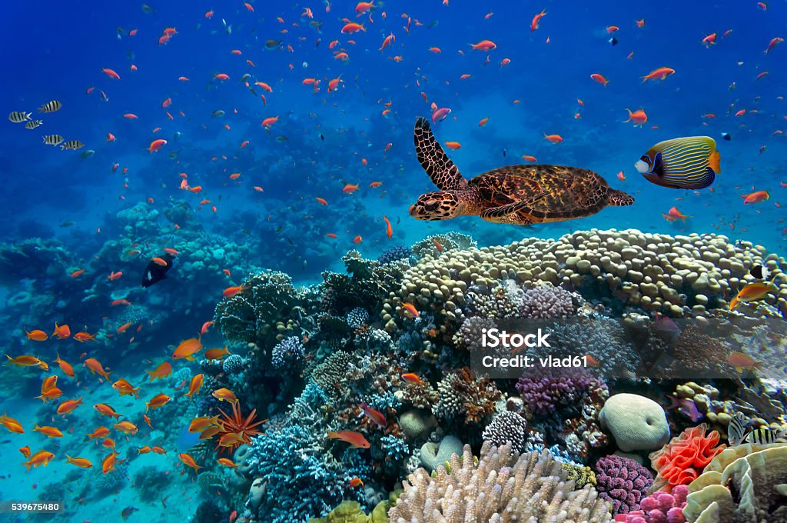
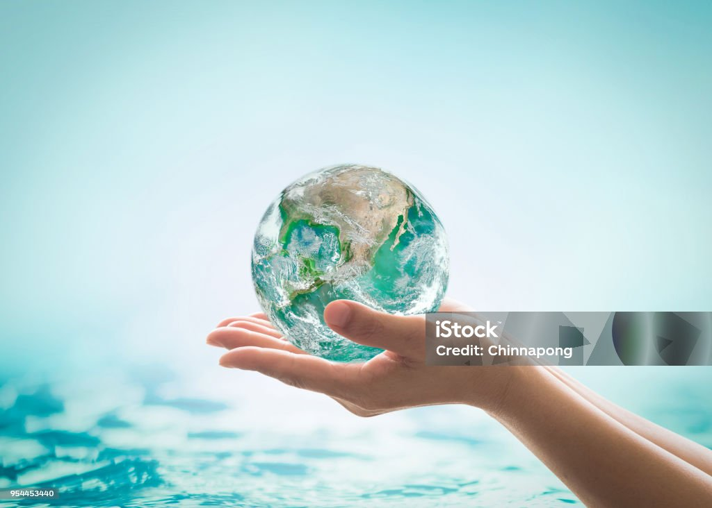

Protecting Life Below Water
Introduction

Life below water is essential for maintaining the balance of our planet. Oceans cover more than 70% of the Earth's surface and provide food, oxygen, and livelihoods for billions of people.
The United Nations Sustainable Development Goal 14 focuses on conserving marine ecosystems and ensuring the sustainable use of ocean resources.
These issues are discussed in detail in the Ocean Threats section.
Threats to Marine Life

Marine ecosystems are facing serious threats due to human activities. Pollution, overfishing, and climate change are damaging ocean habitats.
- Plastic pollution harming marine animals
- Overfishing reducing fish populations
- Coral bleaching due to rising temperatures
- Oil spills destroying ecosystems
Solutions and Actions

Everyone can contribute to protecting life below water by making simple and responsible choices in daily life.
Reduce Plastic Usage
Avoid single-use plastics and recycle waste properly.
Support Sustainable Fishing
Choose seafood from sustainable sources.
Participate in Cleanups
Join beach and ocean cleanup programs.
Spread Awareness
Educate others about the importance of ocean conservation.
Positive Impact
Protecting the oceans leads to healthier ecosystems, increased biodiversity, and sustainable resources for future generations.
Small actions taken by individuals can create a powerful collective impact, helping to restore marine life and protect our planet.
Conclusion
Life below water is vital for our survival and the health of the planet. By taking simple actions and raising awareness, we can protect marine life and ensure a sustainable future.